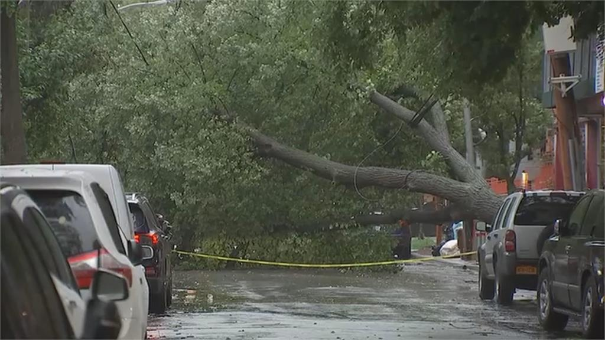

01｜
纽约倒树砸死一名市府员工
纽约东北风暴期间，一名56岁NYCHA员工在布鲁克林东纽约区被倒树砸中身亡。公园局截至周六傍晚收到979起树木受损或倒伏请求。周一公立学校照常开学，隔日停车规定恢复。
来源｜哥伦比亚广播公司纽约台

观察｜
风暴减弱后倒树风险仍可能持续。上学、营业和出行前，应重点检查道路及周边树木状况。


纽约东北风暴期间，一名56岁NYCHA员工在布鲁克林东纽约区被倒树砸中身亡。公园局截至周六傍晚收到979起树木受损或倒伏请求。周一公立学校照常开学，隔日停车规定恢复。
来源｜哥伦比亚广播公司纽约台

观察｜
风暴减弱后倒树风险仍可能持续。上学、营业和出行前，应重点检查道路及周边树木状况。
纽约市宣布设立永久Jobs NYC Center，为求职者提供市政府职位查询、申请及公务员招聘流程帮助。中心位于曼哈顿2 Lafayette St.，10月5日起周一至周四开放免预约服务。
来源｜amNY
观察｜
市府仍有大量职位空缺。求职者可提前了解岗位资格、考试要求和申请流程。
一名63岁女性在中央公园遭袭身亡。警方已逮捕36岁的乔纳森·罗伯斯，并以谋杀和非法持有武器等罪名起诉。
来源｜ABC7纽约台
观察｜
个案不等于整体治安趋势，后续更值得关注警方是否调整公园巡逻和安全措施。
纽约州监狱系统近期疑似过量用药事件明显增加，尽管惩教部门此前已加强邮件审查和相关管控措施。
来源｜The City Reporter
观察｜
管控加强后事件仍增加，说明来源渠道可能不止邮件，后续排查和政策调整值得关注。

风暴逐步减弱，但受满月大潮影响，长岛沿海社区周一仍面临局部积水和高潮洪水风险。
补充详情｜居民可通过美国国家气象局及纽约市应急管理局官网查询所在区域具体的高潮时段和沿海洪水警告状态。
快评｜
风暴过去不等于沿海风险结束，出行和停车仍需查看高潮时段。
纽约市周一起恢复隔日停车规定，垃圾、回收及堆肥正常收集，公立学校照常开学。
补充详情｜风暴期间暂停的市政服务已陆续恢复，具体线路和时间可通过纽约市官网或311查询。
快评｜
市政服务恢复正常，有车居民应重新确认街道清扫时段。
调查报告称，一名莱克斯岛在押人员死亡前等待约3.5小时才获得医疗救助。
补充详情｜该报告属于对莱克斯岛在押人员死亡事件的例行独立审查之一，具体责任认定及后续整改措施尚待相关机构公布。
快评｜
等待时长暴露医疗响应问题，后续整改措施值得关注。
纽约市因联邦退伍军人拨款附带“性别意识形态”限制，选择退出相关长期资助项目。
补充详情｜市府认为相关条件可能迫使其歧视跨性别退伍军人，因此选择退出；与此同时，退伍军人事务部本月宣布纽约州2027财年退伍军人无家可归服务获得约6590万美元资助。
快评｜
争议核心是联邦资金条件与地方政策之间的冲突。
MTA预计周一早高峰恢复完整服务，包括此前因洪水暂停的长岛铁路长滩支线。
补充详情｜长滩支线周日曾在瓦利斯特里姆至长滩之间暂停运行，并以接驳巴士替代；MTA目前预计周一恢复完整高峰服务，乘客出发前仍可通过MTA官方渠道确认实时状态。
快评｜
交通已基本恢复，但通勤者出发前仍应查看实时线路状态。
联合宫殿周一晚7点30分放映1950年经典电影《日落大道》，放映前安排现场暖场演出。
补充详情｜活动地点在曼哈顿华盛顿高地区百老汇大街4140号，具体票务及入场信息可通过剧院官网查询。
快评｜
风暴过后，城市晚间文化活动正逐步恢复正常。

这场东北风暴带来的直接冲击已经减弱，但一名NYCHA员工在风暴期间被倒树砸中身亡，公园局收到近千起树木受损请求，长岛沿海社区仍在等待新一轮高潮——这些信号共同指向同一个事实：风暴的“峰值”过去之后，地面上的次生风险才刚刚进入需要处理的阶段。
这类次生风险的特点是：官方提示解除、学校恢复开学、隔日停车规定重新生效，这些“恢复正常”的信号，往往比实际路面和树木安全状况恢复得更快。
对有孩子上学、有户外经营场所或有车辆在街边停放的家庭和商户而言，真正值得核对的不是“风暴是否已经过去”，而是自己上学路线、门前树木和停车位置这些具体地点，今天是否仍存在被忽略的实际风险。
评论
你今天最关注哪一条？